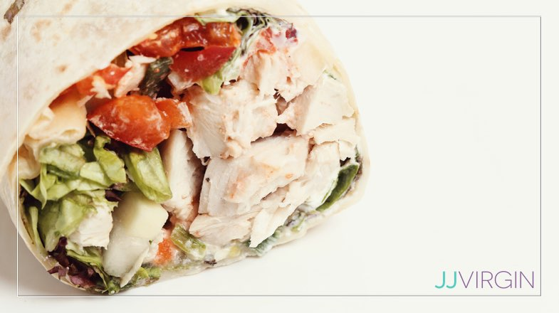

Chicken Pesto Wrap

Simple and Tasty Chicken Pesto Wrap
This simple wrap is great for packed lunches or to enjoy at home. Ingredients can be made at home or picked up from the local grocery store
and the outcome will be just as tastey.
Ingredients
- 6-10 halved cherry tomatos/li>
- 1/8 cup diced cucumber
- handful cut spinach
- 1/8 cup diced red pepper
- crumbled feta to taste
- 1/4 cup sliced chicken
- 1/2 tbspn mayo
- 1/2 tbspn pesto
- Medium tortilla or pita
Instructions
- Lay tortilla flat and spread on first mayo and then pesto
- Dice up all veggies and spred in an even layer onto the wrap
- Next spread chicken in even layer over veggies
- sprinkle over cheese and.
- Fold in sides of wrap then fold over top of wrap to form a sealed wrap shape
- In a hot dry pan place wrap seam side down. Once browned flip wrap and do the same to the other side
- Remove wrap from pan and enjoy!